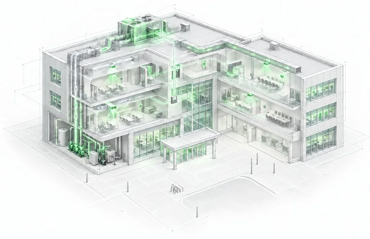

Building recommissioning
Over time, building automation systems can drift from the way they were intended to operate. Schedules change, setpoints shift and control sequences fall out of sync. Recommissioning identifies that operational drift and helps your team recover energy performance using the systems already in place.

What is involved
How it works
Rede’s engineers review your building automation system and identify where schedules, setpoints or control sequences no longer match design intent or current operating needs. We document the recommended corrections and work alongside your facilities team or controls contractor through implementation.
Rede does not make changes to the BAS directly. Your authorized controls contractor implements the approved changes, and Rede measures and verifies the results. The focus is on operational improvements using existing equipment and controls, without defaulting to a major capital project.
How it works
Rede’s engineers review your building automation system and identify where schedules, setpoints or control sequences no longer match design intent or current operating needs. We document the recommended corrections and work alongside your facilities team or controls contractor through implementation.
Rede does not make changes to the BAS directly. Your authorized controls contractor implements the approved changes, and Rede measures and verifies the results. The focus is on operational improvements using existing equipment and controls, without defaulting to a major capital project.
What is involved
What you will need
For qualifying buildings, Rede can complete the recommissioning review remotely without a site visit. Here is what makes that possible.
A modern building automation system with detailed controls coverage
Secure remote access to the BAS through a VPN or an approved equivalent
Digital mechanical and electrical drawings and current controls as-builts
A facilities controls lead or contractor who can implement approved findings
Rede never makes changes to the BAS directly. All corrections are made by your controls contractor, with your authorization.
What you will need
For qualifying buildings, Rede can complete the recommissioning review remotely without a site visit. Here is what makes that possible.
4 requirements
Rede never makes changes to the BAS directly. All corrections are made by your controls contractor, with your authorization.
Results
Recommissioning focuses on practical changes to schedules, setpoints and control sequences that can reduce unnecessary energy use while keeping existing equipment in service.
After the approved corrections are implemented, Rede measures the results against an agreed baseline. Your team gets a clear record of what changed and whether building performance improved. Because operating conditions continue to change, performance should be monitored over time.
What gets measured
Results
Recommissioning focuses on practical changes to schedules, setpoints and control sequences that can reduce unnecessary energy use while keeping existing equipment in service.
After the approved corrections are implemented, Rede measures the results against an agreed baseline. Your team gets a clear record of what changed and whether building performance improved. Because operating conditions continue to change, performance should be monitored over time.
What operational drift looks like
Running outside occupied hours Matched to the schedule
Schedules, setpoints and control sequences drift out of sync over time. Recommissioning finds that drift and brings operation back in line, using the equipment already in place. Hours shown are illustrative.
Access funding
Funding depends on your location, building eligibility, program intake dates and the scope of the work. Rede helps identify applicable commercial energy efficiency programs and supports the incentive application process as part of the recommissioning engagement.
Programs we work with
Program eligibility, funding amounts and intake availability are confirmed through a conversation with the Rede team.
Access funding
Funding depends on your location, building eligibility, program intake dates and the scope of the work. Rede helps identify applicable commercial energy efficiency programs and supports the incentive application process as part of the recommissioning engagement.
Programs we work with
British Columbia
BC Hydro and FortisBC Continuous Optimization Program
Saskatchewan
Commercial energy optimization support — current program eligibility and intake availability are confirmed during qualification.
Program eligibility, funding amounts and intake availability are confirmed through a conversation with the Rede team.
Before you ask
Building recommissioning is a structured review of how an existing building and its control systems are operating. It identifies operational drift and recommends corrections to schedules, setpoints and control sequences.
No. Recommissioning focuses on improving the operation of existing systems. A retrofit typically replaces or adds equipment. Some buildings may need both, but recommissioning does not begin by assuming a major capital project is required.
For qualifying buildings, yes. Remote recommissioning requires a modern BAS, secure remote access, suitable digital documentation and a controls lead or contractor who can implement approved changes.
Your authorized controls contractor makes the approved changes. Rede reviews the BAS, documents recommendations, works alongside your team and measures the results.
Yes. Rede identifies applicable commercial building programs and supports the application process. Eligibility and funding depend on the building, location, project scope and current program availability.
Still have a question? Book a call and we’ll answer it directly.
Other services
Investigate
Start here if you are not sure which buildings need attention. The analysis shows where the largest opportunities may exist before you scope recommissioning work.
See Energy Gap AnalysisPlatform
Keep the results visible after the work is complete. RUN tracks monthly energy use and costs so your team can see whether performance improvements are holding.
See RUNManage
Building operations continue to change. An ongoing energy management program helps identify new drift and keeps performance visible over time.
See Energy ManagementIs it a fit?
Tell us a little about your building portfolio and what you are seeing. We’ll help determine whether recommissioning is a fit and whether applicable funding may be available.